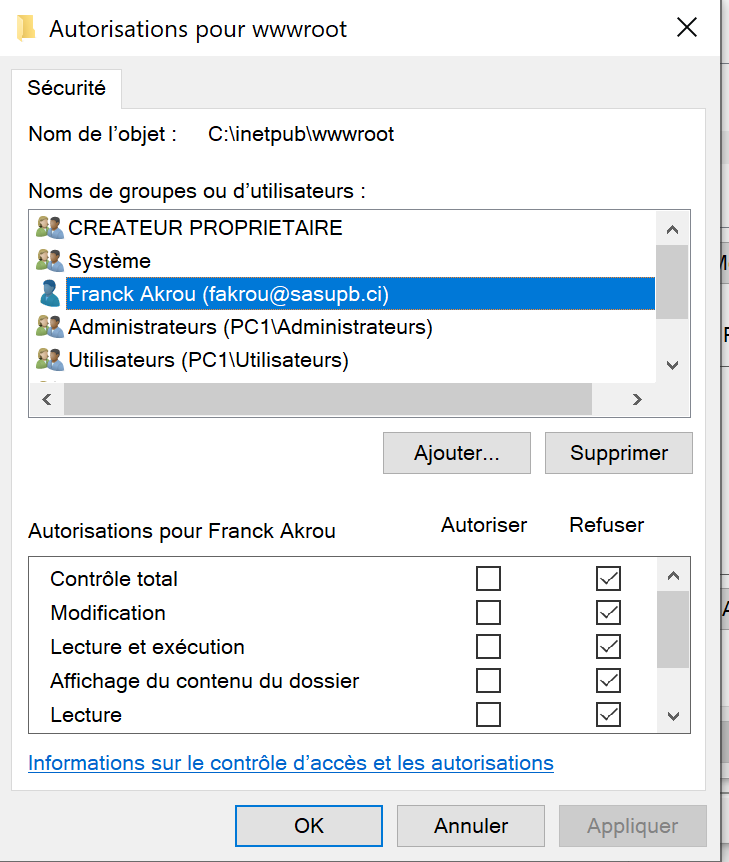

Contexte
Le lab explore les bases d'une gestion d'identites d'entreprise : organisation logique, groupes, politiques, delegation et controle d'acces.
IAM / Active Directory
Lab d'administration des identites : structure AD, comptes, groupes, GPO, politiques de mot de passe, delegation DHCP/DNS, controle d'acces IIS et audit.
Le lab explore les bases d'une gestion d'identites d'entreprise : organisation logique, groupes, politiques, delegation et controle d'acces.
Le lab demande de distinguer les droits d'administration, les droits applicatifs et les permissions systeme afin d'eviter une elevation de privileges non souhaitee.
Captures




Le projet documente une chaine IAM complete : creation, politiques, delegation, controle d'acces et preuve d'audit.
Ajouter une matrice RBAC, des scripts PowerShell de verification, et une section sur la remédiation apres detection d'evenements suspects.